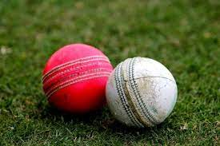
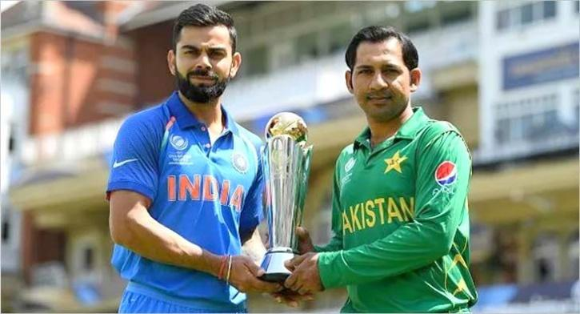

- Home Page
Popularity
Play Difference
Cricket World Records
Feedback
Cricket Facts
I will show some facts about cricket!
- The first recorded game was played in 1646.
- The longest cricket match took place in 1939 between England and South Africa, after 14 days it ended with a tie.
- The two most common causes for pausing or suspending a cricket game is rain and bad light.
- When a batsman scores 100 runs, it called a century and is considered an achievement.
- Despite being a team game, individuals are stressed upon and put under pressure.
- Alec Stewart was born on 8/4/63, and the number of test runs that he scored in his career was 8,463.
- A cricket ball weighs around 5 ½ ounces.

- The first ever international match took place in 1844.
- Hanif Mohammad, a Pakistani player holds the record of longest innings for the test cricket match.
- India is the only nation to win three different world cups.
- The length of a cricket pitch is 22 yards.
- The Cricket sport was played in 1896 and 1900 in the Olympics.
- West Indies opener Chris Gayle is the only batsman to smash a six off the first ball of a test match.
- Jim Laker is the only bowler who took 19 wickets in a test match.
- Cricket is a popular sport – so popular that it is considered the second most-loved sport in the world. It is enjoyed by more than 2.5 billion fans in 180 countries. This sport is most popular in England, Australia, and subcontinental Asia (especially India and Pakistan).
- ricket was originally a children’s game played in England during the 16th century, specifically in the southeastern counties.
- Although there are 31 countries that play cricket in the international stage, only 12 have qualified for Test status.
- The biggest event in cricket is the World Cup, which is organized by the International Cricket Council (ICC). It was founded in 1909 as the Imperial Cricket Conference. The three founding countries include England, South Africa, and Australia.

- The country with the most losses in International Cricket is England, having played 691 unsuccessful matches. They have also played the most games (1,885).
- India and Pakistan are considered the biggest rivals in cricket. This sports feud is supposed to have begun in 1947 after Pakistan became independent from India. The rivalry is good for viewership, however. It is estimated that around 300 million people from different countries would tune in to watch the two nation’s intense matches.

- Although cricket is a non-contact sport, players still experience injuries during a game, some of which are career-ending or even fatal.